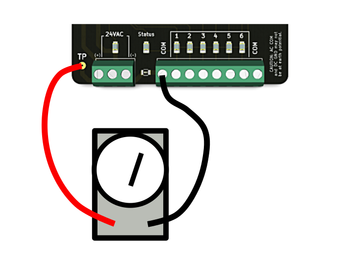

What you need:
Using the Activities Page or the Zone Setup Dialog, start the zone you wish to measure. Observe the LEDs on the WSC-LP1 and confirm the correct zone if running.
Make sure your meter is set for "volts A/C" or "millivolts A/C" and measure the voltage between the test point "TP" and either COM terminal.
Multiply the voltage measurement by ten to get A/C current. E.g. 31mV = 310mA.
Note the startup current through the solenoid can be several times higher than the steady-state A/C, but this transient current is not dangerous nor will it normally trip the PTC fuse.
If a zone has been isolated it is a good idea to measure the zone current before putting the zone back into regular service. You should compare it to other zones you know are working. Allowing a solenoid to operate which is drawing high current cannot be a good thing in the long run.